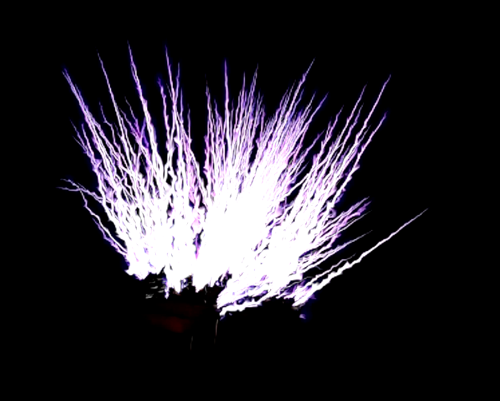
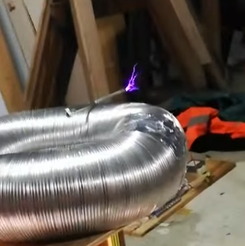

Ma première bobine Tesla à tubes utilisant un GU-50 alimenté par un transformateur de micro-ondes (MOT) et un doubleur de tension. Les effluves peuvent atteindre 25-30 cm en CW.

Une SSTC simple sur secteur, utilisant un demi-pont de 2 IGBT (STGW30NC60WD), et le driver simple de DiodeGoneWild (danyk.cz) avec un IR2153.